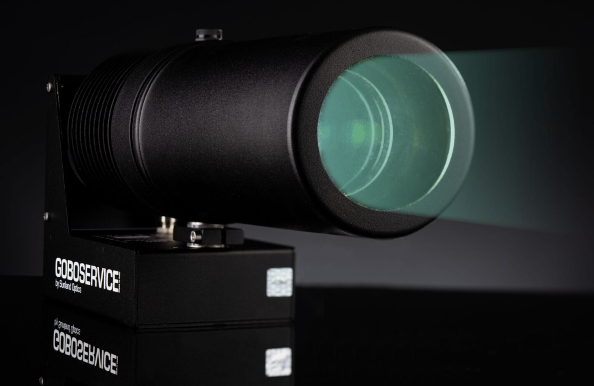
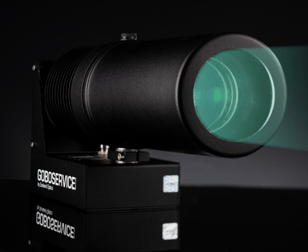

Laser line · IP67
Delta FieldLAS
Crisp adjustable lines for walkways and traffic separation.
$2,400 + GSTView the ProductProjected safety systems
Virtual markings stay visible where paint and tape are damaged by traffic, contamination or constant change.
Project crisp lines, symbols and warnings directly into active work zones.
Projector range
Laser lines or customised projected signs.
Laser line · IP67
Crisp adjustable lines for walkways and traffic separation.
$2,400 + GSTView the Product
Safety signs · 75W
The brightest Signum for lines, warnings and customised symbols.
$3,200 + GSTView the Product
Safety signs · 50W
Projected signs and lines for lower mounting heights and smaller zones.
$2,250 + GSTView the ProductCompare the range
Choose by output, marking type and mounting environment.
| Model | Best for | Protection | Output |
|---|---|---|---|
| Delta FieldLAS | Laser lines | IP67 | Adjustable line |
| Signum 75W | Large signs and bright areas | IP65 | 75W LED |
| Signum 50W | Compact signs and zones | IP65 | 50W LED |
Projectors in action
52 sensor-activated Signum STOP signs at Toll’s Kemps Creek warehouse.
Before you order
What to confirm before the first unit goes in.
No. Projected markings need controlled ambient light and are assessed on site.
Yes. Signum uses a customised GOBO for signs, symbols and warnings.
Signum units have a rated 50,000-hour LED lifespan.
Cotewell plans the position. Hard wiring must be completed by a qualified electrician.
Free on-site demonstration
We confirm the unit, mounting position and ambient light before you order.